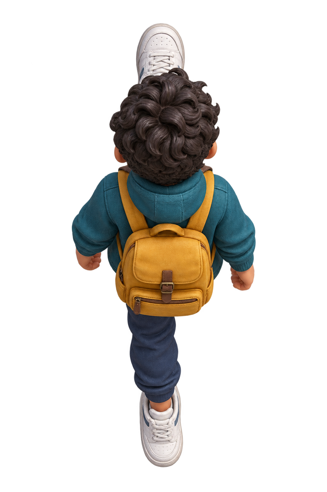

葡文指路探險
Uma cidade. Um destino. Vamos juntos!
O nosso destino 今次目的地

鍵盤 ← ↑ → 或 A B C 對應畫面嘅三張牌。「過馬路」用獨立行人線情境示範。裝置投票需開本機伺服器及連同一個網絡。
城市係課堂練習示意圖。無需登入，亦唔收集學生姓名。
學生同電腦連同一個 Wi-Fi，再開以下網址：
只分享學生網址。若學校 Wi-Fi 禁止裝置互通，可改用舉手投票。
揀一句，先讀出嚟，再睇旅人點行。
更換指令會結束當前投票。向前數第幾條街時，所在路口唔計。
點詞塊，按次序砌一句。
先揀詞 → 讀畀同學聽 → 試行 → 寫返落紙。示範會切到練習地圖、由起點出發。
喺行人線由路邊行去對面。
呢個係行人線情境示範；唔會改變城市地圖上嘅路線。